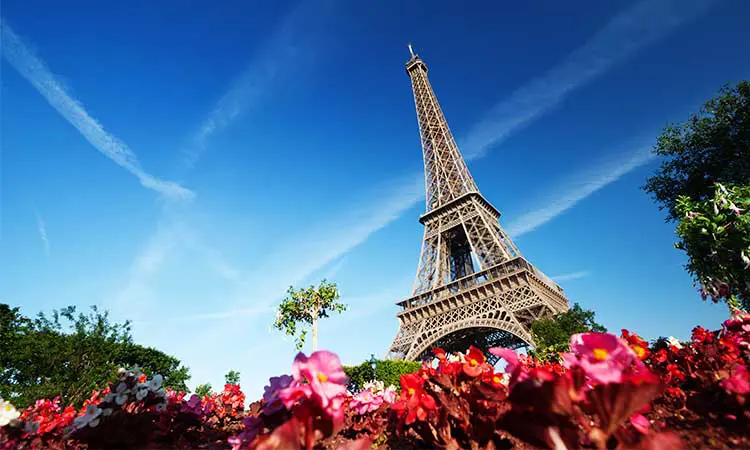
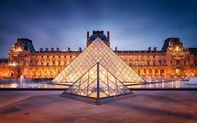
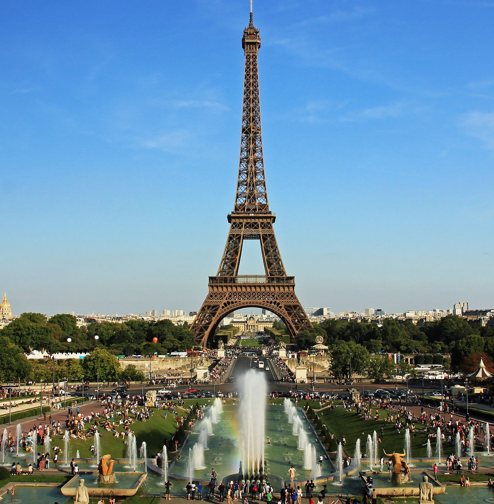

Paris pulsa às margens do Rio Sena como a capital mundial do romance, da alta gastronomia e das belas artes, onde séculos de transformações urbanas,
revoluções iluministas e impérios grandiosos moldaram um dos destinos mais cobiçados e influentes do planeta, sendo que caminhar por suas avenidas
planejadas revela uma simetria arquitetônica perfeita pontuada por prédios de pedra calcária que brilham sob a famosa luz dourada do entardecer. O
dinamismo da metrópole francesa manifesta-se na diversidade cultural de seus bairros históricos, que vão do charme boêmio e artístico das ruelas íngremes de
Montmartre e os cafés intelectuais do Quartier Latin até o luxo aristocrático da Champs-Élysées e a efervescência moderna do Marais, enquanto os corações
dos viajantes são constantemente arrebatados pela visão monumental da Torre Eiffel cortando o horizonte e pela grandiosidade do Museu do Louvre guardando
milênios de engenho humano. Esse formigueiro criativo e vibrante é constantemente equilibrado pela calmaria poética das pontes de pedra medievais, pelos
piqueniques descontraídos ao longo dos canais e pela majestosa silhueta reconstruída da Catedral de Notre-Dame, transformando Paris em um ecossistema
incomparável onde o respeito absoluto ao patrimônio histórico convive pacificamente com a inovação constante na moda, no cinema e na culinária de
prestígio, consolidando a "Cidade Luz" como a alma eterna e o motor inesgotável da identidade e do charme cultural francês.

A Catedral de Notre-Dame ergue-se majestosamente na Île de la Cité, em Paris, como a joia mais preciosa da arquitetura gótica francesa e o coração espiritual e
literário do país, onde as imponentes rosáceas de vidro colorido filtram a luz solar para iluminar quase um milênio de devoção, coroações e passagens
históricas inestimáveis. Erguida a partir de mil cento e sessenta e três, o monumento imortalizado por Victor Hugo superou os séculos para passar por sua
maior provação em abril de dois mil e dezenove, quando um incêndio catastrófico destruiu o seu teto de madeira e derrubou sua famosa agulha, gerando uma
mobilização global sem precedentes para a sua reconstrução. O renascimento do templo consolidou-se com uma emocionante reabertura oficial em dezembro de
dois mil e vinte e quatro e a posterior liberação completa de suas icônicas torres sineiras em setembro de dois mil e vinte e cinco, permitindo que milhões
de fiéis e viajantes cruzem novamente a sua monumental nave central totalmente restaurada, onde os históricos gárgulas de pedra voltam a vigiar
silenciosamente o horizonte parisiense e o fluxo calmo do Rio Sena, reafirmando a catedral como o símbolo eterno de resiliência e a alma poética da cultura
ocidental.

O Museu do Louvre espalha-se monumentalmente às margens do Rio Sena como o maior e mais visitado museu de arte do planeta, onde a antiga e imponente
fortaleza medieval e palácio de veraneio dos reis franceses funde-se harmoniosamente com a modernidade ousada da icônica Pirâmide de Vidro que serve como
portal de entrada no pátio central, sendo que cruzar os seus imensos salões e galerias reais que somam mais de setenta mil metros quadrados equivale a fazer
uma jornada fascinante por dez mil anos de história da criatividade humana. O acervo colossal abriga quase quinhentas mil obras de arte de valor
inestimável e exibe cerca de trinta e cinco mil delas simultaneamente, atraindo multidões diárias que cruzam alas inteiras para contemplar de perto o olhar
enigmático da Mona Lisa de Leonardo da Vinci, a perfeição clássica e helenística da Vênus de Milo e a imponência triunfal da Vitória de Samotrácia, além de
tesouros do Antigo Egito e os opulentos aposentos de Napoleão III. Perder-se por seus corredores ricamente decorados e tetos pintados a ouro revela como este
complexo arquitetônico sobreviveu a revoluções, incêndios e guerras para se transformar no guardião definitivo da memória artística ocidental e oriental,
consolidando o Louvre não apenas como uma joia de Paris, mas como o coração pulsante, erudito e imortal do patrimônio cultural da humanidade.

A Torre Eiffel ergue-se majestosamente no Campo de Marte, em Paris, como o símbolo definitivo da França e uma das obras-primas mais reconhecíveis da
engenharia mundial, onde a imponente estrutura de ferro fundido de trezentos e trinta metros de altura desafia o céu com sua silhueta rendilhada que dita a
identidade da "Cidade Luz" desde a Exposição Universal de dezoito e oitenta e nove. Idealizada por Gustave Eiffel, a torre que inicialmente foi criticada
pelos intelectuais parisienses e apelidada de "monstro de ferro" transformou-se no coração romântico do planeta, sendo que subir em seus elevadores
panorâmicos ou vencer os seus centenas de degraus revela de forma gradual a malha urbana perfeitamente simétrica de Paris encolhendo sob os pés. Chegar aos
seus mirantes elevados proporciona uma visão panorâmica inesquecível de trezentos e sessenta graus que descortina o curso sinuoso do Rio Sena, a imponência do
Arco do Triunfo e as cúpulas distantes de Montmartre, enquanto os casais e viajantes aproveitam o restaurante sofisticado e o bar de champanhe no topo para
celebrar momentos especiais suspensos no ar. O espetáculo atinge o seu ápice quando a noite cai e o gigante de sete mil toneladas de ferro se ilumina com
uma luz dourada, ativando um farol giratório no topo e um piscar de milhares de luzes estelares que cintilam por cinco minutos a cada hora, consolidando essa
joia da era industrial não apenas como um feito arquitetônico extraordinário, mas como a alma pulsante, poética e indestrutível do turismo e da cultura
francesa.